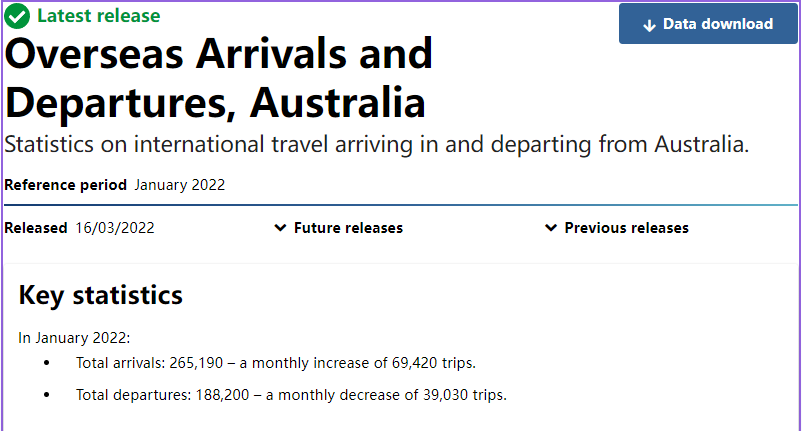

Compared with the current traditional way of hotel reservation, this project is a hotel reservation system used online. Customers can browse the hotel room information in advance through our project, and customers can also use their own information to book hotel rooms and other operations. Compared with the traditional way, it is more convenient and fast, allowing users to complete the booking operation at any place.
Overview
Motivation
Tourism is one of Australia's major industries and as we can see from the latest figures, Australia had a very high number of arrivals in January 2022.
From this data, we can know that there is a certain market demand for the project, because our products can let customers know the hotel information and room configuration in advance before traveling. At the same time, during the epidemic, booking hotels online can also avoid human contact and reduce the potential spread of the virus. Compared with the traditional way of booking rooms, our project can help customers get a better accommodation experience during their travel.
Description
Our product is an online hotel room booking system. The system will be composed of web pages, because web pages are highly compatible, we do not need to code for different hardware or devices, and the same code can run on devices of different systems (Android, Apple, PC).
When the customer needs to make a room, he can open the web page and enter our system. In the system, the customer can check the information of each room, which will involve the size of the room, supporting facilities, price and picture of the room. When the customer has a room that he wants to book, he can make a reservation and input his own information to confirm the reservation. When the reservation is successful, the system will prompt the user that he has completed the operation.
Since our products are designed to make it more convenient for customers to view the information they want to see, we will visually present all kinds of information as much as possible. At the same time, the UI design should be as simple as possible and the size should be appropriate, so as not to cause a negative impact on customers' browsing information. When a customer's reservation information is saved, it is automatically stored in the background cache to prevent the customer from performing tedious and repetitive operations or entering the same information multiple times. And at each step of the system, we provide steps to go back to the previous step, so that customers can easily reverse their actions if they go wrong, or if they want to choose another step.
The customer can make the following detailed operations in our system to complete the process:
Accessing the System Page
Select and view room information
Making a reservation
Enter your own details
Confirm the reservation
When the customer confirms the reservation, the system will send the customer's information (data) to the background. This technology will be realized by connecting the ordering system to a simple database. So when the customer confirms the reservation, the data will be fed back to us from the reservation system to let us know that the customer has confirmed the reservation.
When customers complete the above steps, we will try our best to reduce the load of the system on the equipment, so that customers can use our system more smoothly and quickly, and reduce the occurrence of system crashes and bugs as much as possible.
Tools and Technologies
I intend to build this project as a web page, because of the high compatibility of web pages, different mobile devices only need to use the browser in the mobile device to run. We will use web programming techniques (such as HTML/PHP). Or use modular web editing technology (like WordPress) to develop this project. This project will be used on mobile devices or personal computers, so our project will adapt to these devices as much as possible to improve user experience.
Skills Required
This project requires learning some basic web editing, as our project runs on the web. We can use WordPress For modular web page editing operations, or we can use traditional HTML/PHP language to build our projects. It also requires some art skills, because we need to give our clients a comfortable browsing experience. At the same time, our products may need to connect to the database to upload and read data, so database application skills are also required. I think the above requirements are feasible for our project.
Outcomes
If the project is successful, we will be able to improve users' experience of staying during travel, and this development will also enable the hotel industry to operate more efficiently. In an ordinary way, customers need to call or go to the hotel front desk to book a room, access to information and options are limited. Compared with traditional hotel accommodation, my project enables users to learn information and make choices more efficiently and conveniently. So as to promote the further development of Australia's tourism industry and improve the country's economic income in tourism.